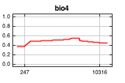
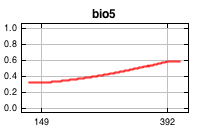
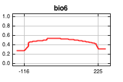
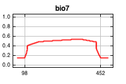
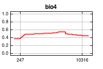
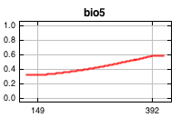
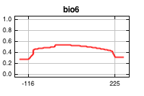
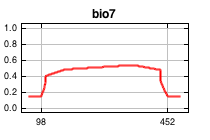
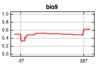
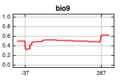

| Cumulative threshold | Logistic threshold | Description | Fractional predicted area | Training omission rate |
|---|
| 1.000 | 0.233 | Fixed cumulative value 1 | 0.955 | 0.007 |
| 5.000 | 0.366 | Fixed cumulative value 5 | 0.874 | 0.020 |
| 10.000 | 0.396 | Fixed cumulative value 10 | 0.799 | 0.057 |
| 0.806 | 0.213 | Minimum training presence | 0.960 | 0.000 |
| 16.545 | 0.419 | 10 percentile training presence | 0.711 | 0.100 |
| 45.038 | 0.496 | Equal training sensitivity and specificity | 0.396 | 0.397 |
| 32.885 | 0.459 | Maximum training sensitivity plus specificity | 0.517 | 0.243 |
| 0.806 | 0.213 | Balance training omission, predicted area and threshold value | 0.960 | 0.000 |
| 2.346 | 0.303 | Equate entropy of thresholded and original distributions | 0.924 | 0.007 |

 







 
